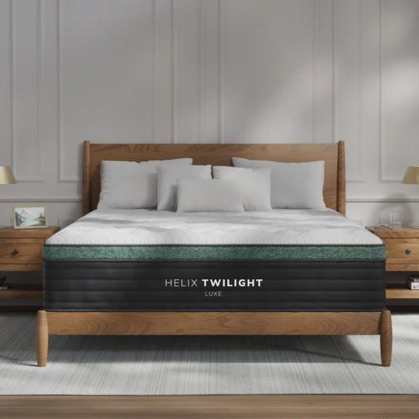
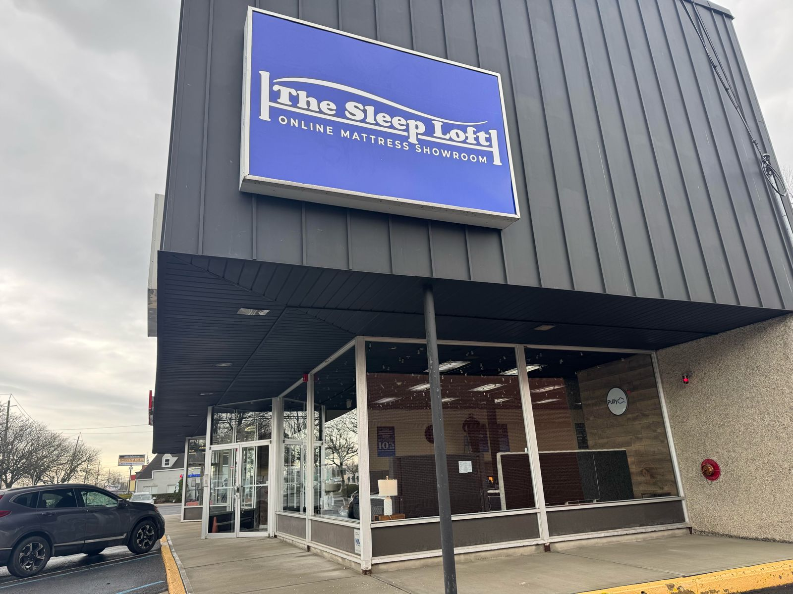

Queen Mattress NJ buyers often feel overwhelmed when trying to choose the right option. With so many mattress types, materials, and features available, it becomes difficult to decide what actually suits your needs. Many people are unsure about the right size, firmness level, or material. This confusion can lead to buying a mattress that feels fine at first but later causes discomfort, poor sleep quality, and wasted money.
The best way to avoid these issues is to evaluate key factors before making a purchase. Understanding size suitability, comfort and support features, and how to properly test a mattress can make a big difference. This guide will walk you through everything you need to know, helping you make a confident and informed decision that improves your sleep experience.

A queen mattress offers a balanced size that works well for both individuals and couples. It provides enough space to move comfortably without feeling restricted, making it one of the most popular choices.
Queen mattresses fit easily into most bedrooms without making the space feel crowded. They offer a good balance between comfort and practicality, especially for medium-sized rooms.
Compared to king-size mattresses, queen options are more affordable while still providing sufficient comfort. This makes them a great choice for buyers looking for value without compromising on space.
Comfort is a personal preference and varies from person to person. Some prefer soft mattresses, while others need a firmer feel. Testing different comfort levels helps you find what suits you best.
Proper support is essential for maintaining spinal alignment during sleep. A good mattress keeps your spine in a neutral position and prevents strain on your back.
Different materials offer different benefits. Memory foam provides pressure relief, hybrid mattresses combine support and comfort, and innerspring options offer a traditional feel. Choosing the right material depends on your needs.
A high-quality mattress should last for years without losing support. Durable materials ensure consistent performance and better long-term value.

Your sleeping position plays a big role in choosing firmness. Side sleepers usually need softer mattresses for pressure relief. Back sleepers benefit from medium firmness for balanced support. Stomach sleepers often require firmer mattresses to prevent lower back strain.
Body weight also affects firmness choice. Heavier individuals need more support to prevent sinking, while lighter individuals may prefer softer surfaces for comfort.
Always spend at least 10–15 minutes testing a mattress in-store. This allows your body to adjust and gives a more accurate sense of comfort. Test the mattress in your usual sleeping position for better results.
Pay attention to pressure points such as shoulders, hips, and lower back. Also check if your spine feels aligned. These factors help you determine if the mattress is suitable. While comfort and support are important, understanding mattress trial periods in paramus can help you reduce risk and make a more confident buying decision.
Motion isolation is important for couples. It reduces disturbance caused by movement, helping both people sleep better.
Some mattresses include cooling materials that help regulate body temperature. This is useful for people who tend to sleep hot.
Good edge support increases the usable surface of the mattress. It also provides stability when sitting or lying near the edges.
A good store should offer a wide variety of options so you can compare different mattresses. Transparent pricing helps you understand costs clearly, while a comfortable testing environment allows you to make a better decision.
A strong example is The Sleep Loft - Paramus, NJ Online Mattress Showroom, located at 799 Route 17 South, Paramus, NJ. It provides a spacious showroom where you can test online mattresses before buying. The location offers easy access, ample parking, and a customer-friendly setup designed for proper testing. For more details, you can contact them at 201-301-0295.
Mattresses come in a wide price range, from entry-level options to premium models. Understanding your budget helps narrow down choices without confusion.
Avoid choosing the cheapest option without considering quality. A slightly higher investment often provides better comfort and durability, offering more value in the long run.
Focusing only on price can lead to discomfort and poor sleep. Comfort should always be a priority.
Skipping proper testing increases the risk of choosing the wrong mattress. Always take time to evaluate options.
Not checking return policies can limit your options if the mattress does not suit you. Flexible policies provide added security.
Choosing the right mattress requires careful evaluation of comfort, support, and overall value. Taking the time to test different options and understand key features helps you avoid common mistakes and ensures better sleep quality.
Before making your final purchase, choosing the right Queen Mattress NJ option based on comfort, support, and proper testing can significantly improve your sleep quality and long-term satisfaction. A thoughtful and informed approach leads to better decisions and long-lasting comfort.